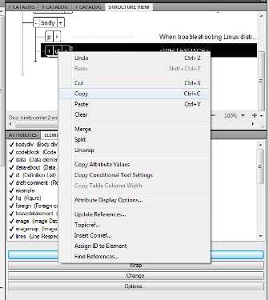
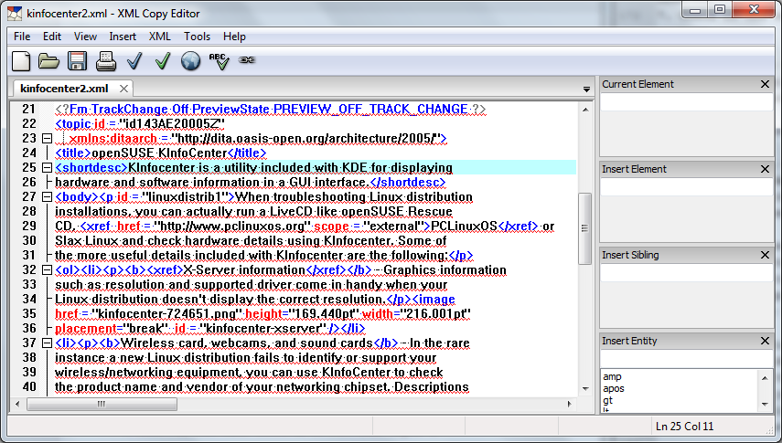

Getting started with a DITA topic in FrameMaker 10¶
Most of Adobe’s products, such as Photoshop and InDesign, are intuitive and fairly easy to learn. FrameMaker, however, can be a challenge even to the most dedicated XML or Adobe enthusiast. Lynda.com has a fairly good overview of using FrameMaker for unstructured documents, but if you plan to start with structured FrameMaker and DITA then it’s a good idea to try out the included DITA templates.
If you are just getting started with DITA then I recommend a really well written article by Hussein Shafie entitled DITA for the Impatient.
To begin writing a DITA Topic in FrameMaker 10:
Click File then New. Select DITA then New<topic>…
Input a filename and click Save.
FrameMaker loads the Structured Authoring workspace and should display the Structure View, Attributes, and Elements panels.
Note
One concept that can be difficult for those familiar with typical WYSIWYG applications is that for FrameMaker you work primarily on the Structure View panel for XML tags and the outline of the document and the document window for the readable text. For clarity, this tutorial will specify if the step will be done in the Structure View panel or the document window.
On the document window, select TOPIC TITLE and type your topic. Do not press the Return/Enter key after entering your title. To avoid confusion, avoid using the Return/Enter key when working in the Structured Authoring workspace.
We’ll now insert a Short Description, an optional part of a Topic as recommended by DITA 1.2 Specifications. If you need a guide, you can download the DITA 1.2 Specifications as a PDF or CHM for Windows users. For the sake of brevity, this tutorial will only focus on using
title, shortdesc, body, ordered list,andrelated linksto structure the document.On the Structure View panel, place your mouse pointer under title so an arrow is displayed. Click once for a structure insertion point (a 90 degree rotated triangle) to be displayed.
On the Elements panel, click
shortdescand then Insert.On the document window, a text insertion point is now available. Enter your short description for your Topic.
If you are going to paste text from another source, use the Paste Special option under the Edit menu. Select Text (for plain text) to avoid any markup or encoding issues.
On the Structure View panel, place your mouse pointer under
shortdescso an arrow is displayed. Click once to produce a structure insertion point. Selectbodyon the Elements panel and then click Insert.
On the document window, type or paste your short description.
On the Structure View panel, place your mouse pointer under
pand click once to produce a structure insertion point. Selectol(Ordered List) and then Insert.
If you make a mistake and select the wrong Element from the list. Do not click Undo as you would with InDesign or Photoshop. Instead, select the Element from the Structure View panel, right-click, and then click Clear.
On the document window, type or paste your first list item.
To add additional list items to your list, just repeat the process in the Structure View panel but clicking underneath the
lielement. If you make a mistake or press the Return key or input the text/tag in the wrong place, just right-click on the item in Structure View and click Clear.
Don’t worry about adding links, using other elements like bold and figure quite yet. Finish your main text first and you can add additional elements using the Wrap option later.
On the Structure View panel, click the
-next toolto collapse the list once you are finished to give you an abbreviated preview of your structure. We will now add therelated linkselement to complete the article.The related links deserve a special section of its own so click under the main hierarchy of topic. Do not click under
bodyorolin the Structure View panel.
FrameMaker will assist you by not displaying related-links on the Elements panel if you click under ol or body.
Select related-links on the Elements panel and click Insert.
To add links, click
linkon the Elements panel. FrameMaker 10 will display the DITA Link panel.
For this tutorial, we’ll add a simple External Link. In the DITA Link panel, click External Link.
In the DITA External Link window, fill out the Link Target(href): and Link Text: items. Click OK.
On the document window, the new external link will be added. To add a description, click under
linktextin the Structure View panel and selectdesc(Description) on the Elements tab. Click Insert.
Note
FrameMaker has a bad habit of persistently displaying the DITA Cross-Reference panel after you add links. Just close the panel and click on the Elements tab and Structure View tab to display them again and continue working.
To add more links, repeat the process by adding another link element under
related-links.Click File > Save to save your document. By default, FrameMaker 10 saves the document as .xml but if you plan to use the document as part of a larger DITA-based project, rename the file with the file extension .dita from File Explorer.
Adding an external link¶
We previously added a list of external links under the relatedlink section. This time we will add a hyperlink to text within the second paragraph.
In the document window, select the text which will link to an external URL.
Select
xrefin the Elements list and then click Wrap.If FrameMaker 10 has not displayed the DITA Cross Reference panel, click the tab and then click External Xref.
In the Xref Target(href): field, input the external URL. Input the Link Text to be displayed as needed.
Click OK.
Adding an internal link¶
Although this short topic doesn’t need an internal link, we’ll add a link to the second paragraph. Internal links in the same XML document are similar to anchors linked to href in HTML5.
On the document window, select the target text that will serve as the anchor.
Click the Attributes tab to display Attribute Names and Values.
Click the id Attribute Name. Input a Value.
We will now add a link to the anchor on a separate paragraph. In the Structure view panel, click once under the
oltag.On the Elements list, select
pthen Insert.Select
xref(Cross Reference/Link), then click Insert.On the DITA Cross-Reference panel, select Refer to File: and then select your .xml file on the list or leave the item as Current.
Since the text with an id (anchor) was in a
ptag, selectpon the Element Tags list. The id is displayed on the Element Data list. Select the id from the list.
On the Text: item, input text to be displayed for linking to your id.
Click Insert. The text will be displayed on the document window and a link to the second paragraph will be accessible when the FrameMaker document is exported to PDF.
Using the b element on text¶
The b (Bold) element is surprisingly still used quite frequently in FrameMaker documents despite being a presentation element rather than a semantic one. Check with your instructor or company style guide for the correct or more specific element to use in place of the b (Bold) element. Since you are working on a structured XML document, your guide or instructor will probably discourage using the Bold element.
Note
The b element is added in this tutorial to demonstrate how an inline element will be displayed when added in a structured document and exported to PDF using FrameMaker 10.
On the document window, select text to be rendered as bold.
Select
b(Bold) on the Elements list. Click Wrap.
The text will be displayed as bold on the document window and later on will appear as bold in the rendered PDF.
Adding a figure or an image¶
You can use the image element to add a bitmap or use the figure element to add both a title and an image. For this tutorial, we’ll add a figure under one of the items on the unordered list.
On the Structure view panel, click once under the p tag and select
fig(figure) on the Elements list. Click Insert.Select
titleon the Elements list. Click Insert.On the document window, input your image title.
On the Structure view panel, click once under
title. Selectimageon the Elements list. Click Insert.On the Insert Element window, click Browse to navigate to your image. Click OK.
By default, the window will only display available JPEGs. Change the Files of type: option if your image is a GIF, PNG, or BMP.
On the Imported Graphic Scaling window, select or specify the appropriate dpi. Click Set.
The image will be displayed on the document window. Select the image on the Structure view panel.
On the Attributes panel, change the placement attribute to break or inline.
For more information about attributes for the image element and how to adjust an image’s appearance when exported to PDF, refer to the DITA 1.2 specification.
Verifying the document¶
When you are done adding links, figures, and text, it is recommended that the tags in the document are validated.
To validate your document:
Click Element then Validate…
In the Element Validation panel, select Entire Document.
Click Start Validating. Ideally, the panel should indicate that your “Document is valid.”
Publishing to PDF¶
Even if your DITA file will eventually be part of a larger system of documents and references, it’s still a good idea to produce a PDF from FrameMaker to check if the internal links work and how the document may look like in PDF form. Take note, however, that since this tutorial used the Adobe template for DITA topics, none of the formatting has been customized and uses Adobe’s defaults.
To produce a PDF from your DITA topic:
Click File then Save As PDF…
Input a filename and click Save.
On the PDF Job Options: item, select Standard.
Click Set.
If your system has Adobe Acrobat installed, the output PDF will automatically be displayed.
Check the bookmarks that are automatically created.
Check if the external links you added are working.
Exporting to XML from FrameMaker 10¶
Many veteran XML writers criticize the XML produced from FrameMaker and some consider using a non-Adobe IDE or a plain text editor as a better option when working with DITA. If you want to see the XML or work on your document using other methods, you can open your DITA file in editors such as XML Copy Editor, Visual Studio, or even a browser to check the text.
Since this tutorial used the DITA template FrameMaker provides, the file is saved as .xml so you can open them directly using another application. If you saved your document in FrameMaker’s native file format (.fm), click File then Save As XML… to produce an XML file.